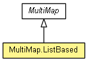

-
-
Nested Class Summary
-
Nested classes/interfaces inherited from interface java.util.Map
Map.Entry<K,V>
-
Method Summary
-
Methods inherited from class org.eclipse.net4j.util.collection.MultiMap
clear, containsKey, containsKey, containsValue, entrySet, get, getDelegate, isEmpty, keySet, put, putAll, remove, size, values
-
Methods inherited from class java.lang.Object
clone, equals, finalize, getClass, hashCode, notify, notifyAll, toString, wait, wait, wait
Copyright (c) 2011-2014 Eike Stepper (Berlin, Germany) and others.